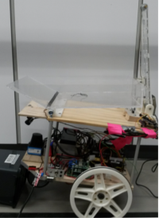

Frobit Online Monitor
| Connection (frobit core): | |
|---|---|
| Control Mode [auto/man]: | |
| State (mission): | |
| Position On Map: | |
| Linear velocity: | |
| Angular velocity: |
| j0 | |||||
|---|---|---|---|---|---|
| j1 | |||||
| j2 | |||||
| j3 | |||||
| j4 | |||||
| j5 | |||||
| G |
Workcell Online Monitor
| Connection (workcell core): | |
|---|---|
| Control Mode [auto/man]: | |
| State (mission): | |
| Joint 0: | |
| Joint 1: | |
| Joint 2: | |
| Joint 3: | |
| Joint 4: | |
| Joint 5: | |
| Gripper: |
|  |
|
Tipper Online Monitor
| Connection (frobit core): | |
|---|---|
| Control Mode [auto/man]: | |
| State (mission): | |
| Position: | |
| Velocity: |

Conveyor Belt Online Monitor
| Connection (workcell core): | |
|---|---|
| Control Mode [auto/man]: | |
| Status: | |
| Velocity: |
| Frobit's USB Camera | Workcell's USB Camera |
|---|---|
| Frobit's Topics | Workcell's Topics |
|---|---|
| Frobit's Active Nodes | Workcell's Active Nodes |